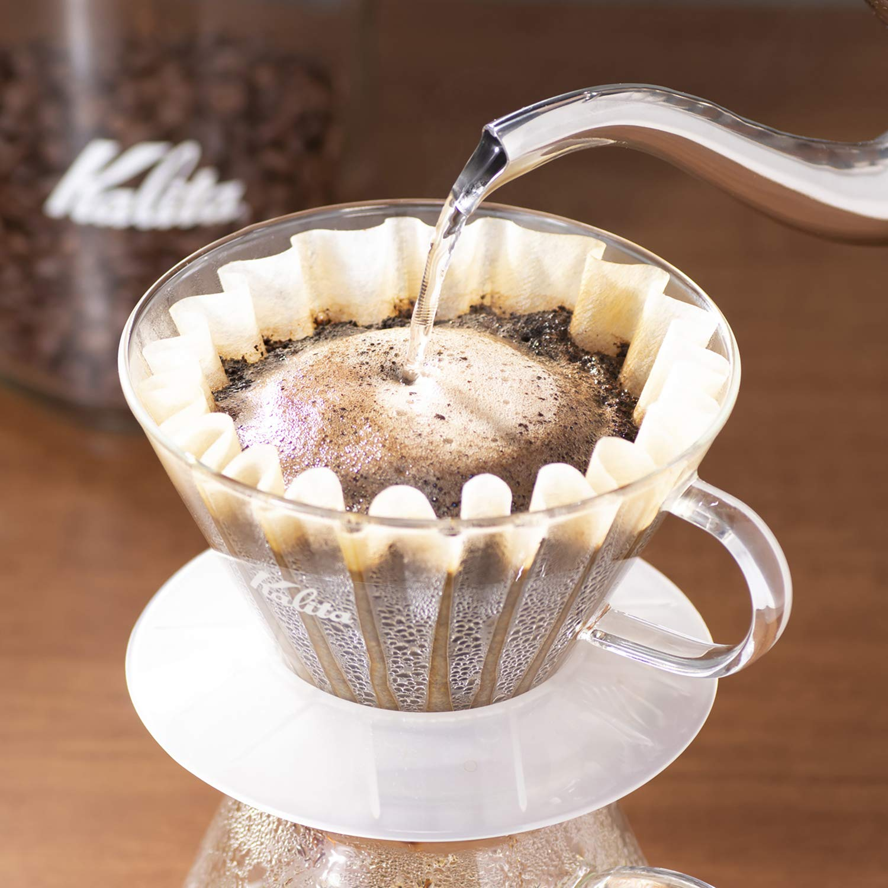

Kalita Wave

Description
The Kalita Wave is the perfect percolator style coffee.
It is easy to adjust the strength by adjusting the beans used.
- 15 to 20 grams of coffee
- JX-Pro grind at roughly 34 clicks
- 300g of water
- Filter compatible with your Kalita Wave
- Grind all of your beans
- Prewet your filter, we recommend using hot water while placed in the basket
- Place all of your beans inside the filter
- Slowly pour your water, watch your pour!